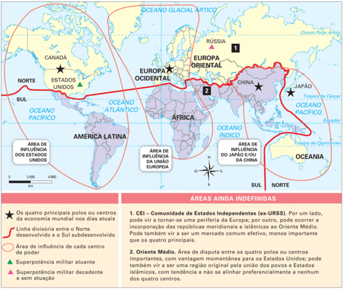
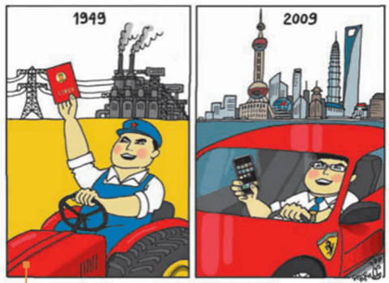
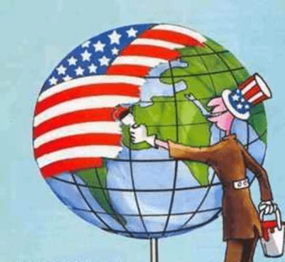
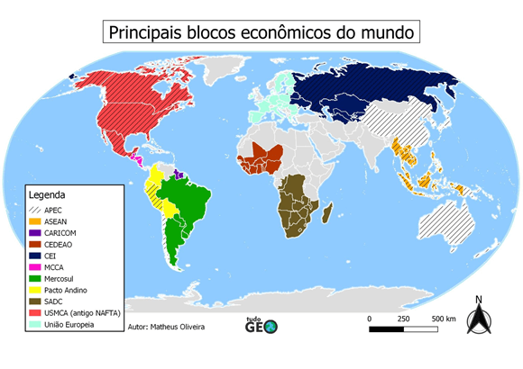
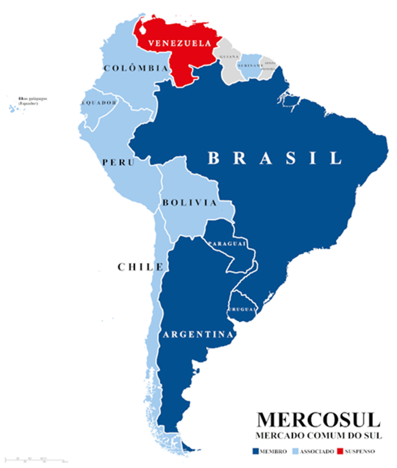
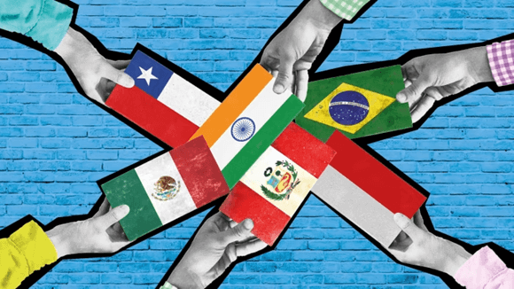
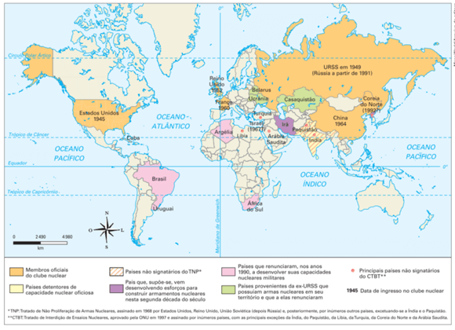

Texto 11 - Geopolítica e regionalização II: Nova Ordem Mundial
Conteúdo: Nova Ordem Mundial Multipolar; Blocos Econômicos; Ameaça nuclear; Novos conflitos
Mundiais;
Objetivo: Caracterizar a ordem mundial pós-Guerra Fria.
Destacar as diferentes visões sobre a organização do poder político e econômico no espaço mundial na
atualidade.
Destacar a importância dos blocos econômicos nessa nova ordem, assim como entender os diferentes níveis de
integração que caracterizam tais organizações.
Digite seu nome
Introdução
Na aula passada vimos como ocorreu a transformação
da ordem geopolítica mundial desde o fim da Segunda Guerra, período conhecido como Guerra Fria.
Na aula de hoje, vamos explorar um tema crucial para compreender o mundo contemporâneo: a Nova Ordem Mundial
Multipolar. Após o fim da Guerra Fria, o cenário geopolítico e econômico do mundo se transformou, e é isso
que vamos analisar hoje.
Questões para serem respondidas no caderno sobre o tema da aula de hoje:
1. O que significa a Nova Ordem Mundial Multipolar e em que contexto ela surgiu?
2. Quais são algumas das potências globais que emergiram após o término da Guerra Fria? Dê exemplos
de sua influência.
3. Explique como a competição e a cooperação entre as potências globais impactam a geopolítica
mundial.
4. Quais são alguns dos desafios e implicações da Nova Ordem Mundial Multipolar?
5. Cite exemplos de hegemonia econômica, militar e cultural de algumas potências globais mencionadas
no texto.
6. Qual é a importância dos blocos econômicos e como eles funcionam para promover a integração entre
os países membros?
7. Dê exemplos de blocos econômicos significativos e explique seus objetivos.
8. Quais são os benefícios do estímulo ao comércio promovido pelos blocos econômicos?
9. Por que a proliferação nuclear é uma preocupação para a segurança mundial? Cite exemplos de
tratados para frear essa proliferação.
10. Quais são alguns dos conflitos étnicos, religiosos e territoriais mencionados no texto? Como
eles representam desafios para a paz global?
A Nova Ordem Mundial Multipolar

Após o término da Guerra Fria, o mundo entrou em uma fase de reconfiguração geopolítica conhecida como a
Nova Ordem Mundial Multipolar. Neste cenário, múltiplas potências globais emergiram, cada uma com seu
próprio conjunto de interesses, influência e capacidades. Vamos explorar mais a fundo essa dinâmica:
Definição e Contexto Pós-Guerra Fria:
- A Nova Ordem Mundial Multipolar refere-se ao período após o colapso da União Soviética em 1991,
caracterizado pela presença de várias potências globais que competem e cooperam em uma arena internacional
mais complexa.
- Esse cenário contrasta com a bipolaridade da Guerra Fria, em que os Estados Unidos e a União Soviética
dominavam o cenário internacional.
Surgimento de Múltiplas Potências Globais:
- Estados Unidos: Após a Guerra Fria, os Estados Unidos emergiram como a
única superpotência, com influência econômica, militar e cultural em todo o mundo. Exemplos de sua hegemonia
incluem a dominação do dólar como moeda de reserva global e sua presença militar em várias regiões.
- China: Nas últimas décadas, a China se tornou uma das principais potências
globais, com um crescimento econômico impressionante e um papel cada vez mais ativo na política
internacional. O país busca expandir sua influência por meio da Iniciativa do Cinturão e Rota e sua presença
em organizações internacionais.
×
A Iniciativa Cinturão e Rota propõe o desenvolvimento de uma rede multimilionária de projetos de infraestrutura na Ásia, África, Europa e América. O principal objetivo é promover comércio e outras formas de conectividade, mas também melhorar as perspectivas de desenvolvimento econômico dos países participantes.

Fonte: www.cartoonstock.com
- Rússia: Após o colapso da União Soviética, a Rússia buscou reafirmar sua
influência geopolítica. O país mantém uma presença significativa em questões como a crise na Ucrânia, o
conflito na Síria e a segurança energética na Europa.
- União Europeia: Embora seja mais um bloco regional do que uma potência
única, a União Europeia desempenha um papel importante na política global. Seu mercado único e sua moeda
comum, o euro, a tornam uma força econômica significativa, apesar dos desafios internos que enfrenta.
- Índia: Com uma das maiores populações do mundo e uma economia em
crescimento, a Índia também está emergindo como uma potência global. O país busca fortalecer seus laços
econômicos e estratégicos com outras nações, especialmente na região da Ásia-Pacífico.
- Outros Atores Relevantes: Países como Japão, Brasil, Alemanha, Arábia
Saudita e outros também desempenham papéis significativos na Nova Ordem Mundial Multipolar, cada um com suas
próprias áreas de influência e interesses geopolíticos.
Desafios e Implicações:
- A presença de múltiplas potências globais traz uma série de desafios e implicações para a geopolítica
mundial.
- Competição e Cooperação: Esses países competem por recursos, mercados e
influência, o que pode levar a atritos e conflitos. Ao mesmo tempo, também buscam áreas de cooperação, como
questões ambientais, combate ao terrorismo e segurança cibernética.
- Tensões Regionais: A presença dessas potências globais pode intensificar
tensões em várias regiões do mundo. Exemplos incluem as disputas territoriais no Mar do Sul da China, o
conflito na Ucrânia envolvendo Rússia e países ocidentais, e as rivalidades no Oriente Médio.
- Desafios Globais: A Nova Ordem Mundial Multipolar também enfrenta desafios
globais que requerem cooperação internacional, como as mudanças climáticas, a pandemia de COVID-19, a
migração em massa e a segurança energética.
Exemplos de Hegemonia e Atores Globais:
×
Hegemonia é a supremacia de um povo sobre outros, ou seja, através da introdução da sua cultura
ou por meios militares.
Hegemonia Econômica: Os Estados Unidos continuam sendo uma potência econômica dominante,
com empresas como Apple, Amazon e Microsoft influenciando setores inteiros da economia global.

Hegemonia Militar: A presença militar dos Estados Unidos em todo o mundo, com bases em
vários países e uma frota naval poderosa, demonstra sua influência militar.
Influência Cultural: Hollywood, a música pop americana e a cultura de consumo dos Estados
Unidos têm um alcance global significativo, moldando preferências e comportamentos em todo o mundo.
Iniciativas de Infraestrutura da China: A Iniciativa do Cinturão e Rota liderada pela China
visa criar uma rede de comércio e infraestrutura que se estende por várias regiões, aumentando a influência
econômica do país.
União Europeia e Cooperação Regional: A União Europeia, apesar dos desafios internos,
continua sendo um exemplo de cooperação regional bem-sucedida, com o mercado único e a livre circulação de
pessoas e bens.
Rússia e o Papel na Energia: A Rússia é uma grande exportadora de energia, especialmente
gás natural para a Europa, o que lhe confere uma posição estratégica significativa no abastecimento
energético do continente europeu, influenciando as políticas e as relações entre os países da região. Essa
interdependência energética tem impacto direto nas dinâmicas geopolíticas e nas negociações entre a Rússia e
os países europeus.
Teste seu conhecimento
Nova Ordem Mundial Multipolar surgiu durante a Guerra Fria, marcando a competição entre duas superpotências.
Teste seu conhecimento
Qual das seguintes potências emergiu como uma das principais após o término da Guerra Fria, com um papel
cada vez mais ativo na política internacional?
Blocos Econômicos: Uma Força na Economia Global
Os blocos econômicos representam uma das principais formas de integração econômica entre países, visando
promover o comércio, a cooperação e o desenvolvimento mútuo. Vamos explorar mais sobre sua importância,
funcionamento e exemplos relevantes:

Fonte: TudoGeo.
Importância e Funcionamento dos Blocos Econômicos:
Integração Econômica: Os blocos econômicos têm como objetivo principal promover a
integração e a cooperação econômica entre os países membros, eliminando barreiras comerciais e
promovendo a livre circulação de bens, serviços e até mesmo de pessoas e capitais.
Benefícios Compartilhados: Ao unirem suas economias, os países membros dos blocos
econômicos podem se beneficiar de mercados maiores, economias de escala, redução de tarifas
comerciais e padronização de regulamentos.
Tipos de Integração: Os blocos econômicos podem variar em termos de grau de
integração, desde uma zona de livre comércio, onde os países eliminam tarifas entre si, até uma
união aduaneira, onde há uma tarifa externa comum, e até mesmo uma união monetária, onde os países
compartilham uma moeda comum.
Exemplos Significativos:
União Europeia (UE): Um dos blocos econômicos mais avançados e complexos, a UE foi
criada com o objetivo de promover a paz e a prosperidade na Europa após as devastadoras guerras
mundiais. Além do mercado único, a UE possui uma união aduaneira e a zona do euro, com países que
adotaram o euro como moeda comum.
Mercado Comum do Sul (Mercosul): Formado por Brasil, Argentina, Paraguai e Uruguai,
o Mercosul busca promover o desenvolvimento econômico e a integração regional na América do Sul.
Eliminação de tarifas, coordenação de políticas comerciais e livre circulação de pessoas são alguns
de seus objetivos.

Associação das Nações do Sudeste Asiático (ASEAN): Composta por dez países do
Sudeste Asiático, a ASEAN busca promover a cooperação econômica, política e cultural entre seus
membros. Embora ainda não seja um bloco econômico tão integrado como a UE, a ASEAN tem sido
fundamental para o desenvolvimento da região.
- BRICS (Brasil, Rússia, Índia, China e África do Sul): Este grupo de países
emergentes
busca promover a cooperação econômica e política entre si. Os BRICS representam uma parte
significativa da economia global e têm colaborado em diversas áreas, desde o comércio até
questões de governança global.

Fonte: Financial Times.
Objetivos e Impactos na Economia Global
Estímulo ao Comércio
Os blocos econômicos promovem o comércio entre os países membros, incentivando a especialização
produtiva,
a competitividade e o acesso a mercados externos.
Atração de Investimentos
A maior integração e estabilidade proporcionadas pelos blocos econômicos muitas vezes atraem
investimentos
estrangeiros, que buscam se beneficiar das oportunidades de mercado ampliadas.
Crescimento Econômico
Ao reduzirem barreiras comerciais e promoverem a eficiência, os blocos econômicos podem
impulsionar o
crescimento econômico dos países membros e da região como um todo.
Desafios e Ajustes
No entanto, os blocos econômicos também enfrentam desafios, como a necessidade de coordenar
políticas
fiscais, monetárias e sociais entre os membros, além de lidar com as disparidades econômicas e
sociais
dentro da região.
Exemplos de Impactos na Economia Global:
UE e o Mercado Único: O mercado único da UE, com mais de 500 milhões de
consumidores, é um
dos maiores do mundo. Isso não apenas beneficia os países membros, mas também parceiros comerciais
ao redor do
globo.
Mercosul e o Comércio Regional: A integração no Mercosul tem promovido o comércio
entre os
países sul-americanos, estimulando setores como agricultura, indústria automotiva e tecnologia.
ASEAN e Investimentos Estrangeiros: A ASEAN tem atraído investimentos de
multinacionais
interessadas no mercado em crescimento do Sudeste Asiático, impulsionando a infraestrutura e o
desenvolvimento
econômico da região.
Desafios do Protecionismo: Com o surgimento de tendências protecionistas em
algumas partes
do mundo, como os Estados...
A Ameaça Nuclear
A proliferação nuclear representa uma das maiores preocupações para a segurança mundial, gerando desafios
significativos:

Fonte: Florenzano (2008).
Proliferação Nuclear:
Refere-se ao aumento do número de países que possuem armas nucleares ou que buscam desenvolvê-las. Isso
cria
um cenário de maior instabilidade e risco de conflitos, pois o potencial de destruição é enorme.
Tratados de Não Proliferação e Redução de Armas Nucleares:
A comunidade internacional tem buscado frear essa proliferação por meio de tratados e acordos. Exemplos
incluem o Tratado de Não Proliferação Nuclear (TNP), que busca evitar a disseminação de armas nucleares,
e
tratados de redução de arsenais, como o Novo START entre EUA e Rússia.
Tensões na Península Coreana:
A posse de armas nucleares pela Coreia do Norte tem gerado grandes preocupações. As tensões na região,
envolvendo a Coreia do Sul, Japão e Estados Unidos, destacam a instabilidade que armas nucleares podem
trazer
para uma região.
Teste seu conhecimento
Por que a proliferação nuclear é uma preocupação para a segurança mundial?
Novos Conflitos Mundiais
Surgimento de Conflitos:
Questões étnicas e religiosas têm levado a conflitos violentos em várias regiões. Grupos separatistas,
disputas
por território e diferenças culturais alimentam esses conflitos.
Conflitos no Oriente Médio:
A região do Oriente Médio tem sido palco de inúmeros conflitos, muitos deles envolvendo questões
religiosas,
étnicas e geopolíticas. A guerra na Síria, o conflito entre Israel e Palestina e as tensões no Golfo
Pérsico são
alguns exemplos.
Conflitos na África:
O continente africano também enfrenta diversos conflitos, muitos deles decorrentes de disputas
territoriais,
rivalidades étnicas e questões políticas. Exemplos incluem os conflitos na República Democrática do
Congo, Sudão
do Sul e Nigéria.
Impactos Humanitários e Desafios para a Paz:
Esses conflitos não apenas causam devastação e sofrimento para as populações locais, mas também
representam
desafios para a paz global. A migração em massa, o deslocamento de pessoas e a instabilidade política
podem ter
impactos duradouros.
Estes desafios destacam a necessidade contínua de cooperação internacional, diplomacia eficaz e esforços
para
promover a segurança e a estabilidade em todo o mundo. A compreensão desses temas é crucial para os cidadãos
globais de hoje, pois todos nós temos um papel a desempenhar na construção de um mundo mais seguro e
pacífico.
Não existe pergunta boba! A Ciência é feita de perguntas!
P:
Qual foi o impacto da ascensão da China na Nova Ordem Mundial Multipolar?
R: A ascensão da China na Nova Ordem Mundial Multipolar tem sido marcada
por seu rápido crescimento econômico, transformando-a em uma potência global com influência significativa em
vários setores, desde o comércio até a geopolítica. A presença da China desafia a hegemonia tradicional dos
Estados Unidos e da União Europeia, alterando dinâmicas e criando novas alianças na política internacional.
P:
Como os avanços tecnológicos estão moldando a Nova Ordem Mundial?
R: Os avanços tecnológicos, como inteligência artificial, blockchain e
automação, estão redefinindo a economia global e as relações internacionais na Nova Ordem Mundial. Países
que dominam essas tecnologias têm uma vantagem competitiva, influenciando desde o comércio internacional até
questões de segurança cibernética e privacidade de dados.
P:
Quais são os desafios e benefícios da integração regional na Nova Ordem Mundial?
R: A integração regional na Nova Ordem Mundial traz desafios como a perda
de soberania nacional e a dependência de políticas externas, mas também oferece benefícios como o aumento do
comércio, a harmonização de regulamentações e o fortalecimento da posição geopolítica dos blocos regionais.
O equilíbrio entre esses aspectos é crucial para entender o cenário geopolítico atual.
Atividade em grupo: Simulação de Negociações para Formação de Blocos Econômicos
Objetivo da Atividade:
Simular negociações diplomáticas entre países para a formação de blocos econômicos. O objetivo é desenvolver
habilidades de negociação, argumentação e compreender a importância da cooperação internacional para o
desenvolvimento econômico.
Roteiro da Atividade:
Formação dos Grupos:
Em grupos de 4 a 5 alunos, cada grupo representando um país fictício.
Cada grupo deve escolher um nome para seu país e designar um representante para as negociações.
Preparação:
Os grupos terão um tempo determinado para se prepararem antes das negociações.
Eles devem discutir os interesses econômicos e comerciais de seu país, bem como seus objetivos ao formar
um bloco econômico.
Cada grupo deve criar uma lista de benefícios que podem oferecer aos outros países e os benefícios que
desejam receber em troca.
Simulação de Negociações:
Cada grupo enviará seu representante para negociar com os representantes dos outros países.
Durante as negociações, os representantes devem apresentar os argumentos e benefícios de seu país para a
formação do bloco econômico.
Eles podem fazer propostas, oferecer concessões e discutir as vantagens de se unirem em um bloco.
Exemplos de Argumentos:
Grupo 1:
Argumentos para Convencer Outros Países:
"Nosso país tem uma indústria agrícola forte e pode fornecer alimentos de alta qualidade a preços
competitivos para todos os membros do bloco."
"Além disso, estamos dispostos a oferecer incentivos fiscais para empresas que investirem em nosso país,
o que pode atrair investimentos estrangeiros para toda a região."
Grupo 2:
Argumentos para Convencer Outros Países:
"Nossa nação é rica em recursos naturais, incluindo minerais e energia."
"Ao unir forças em um bloco econômico, podemos garantir o acesso seguro e estável a esses recursos para
todos os membros."
Grupo 3:
Argumentos para Convencer Outros Países:
"Temos uma mão de obra altamente qualificada e podemos oferecer treinamento e capacitação para
trabalhadores de outros países membros."
"Além disso, estamos dispostos a estabelecer uma zona de livre comércio que reduza as tarifas e facilite
o comércio entre nossas nações."
Grupo 4:
Argumentos para Convencer Outros Países:
"Nosso país é líder em tecnologia e inovação, o que pode impulsionar o desenvolvimento tecnológico de
toda a região."
"Estamos dispostos a compartilhar nossos avanços tecnológicos e colaborar em pesquisas e desenvolvimento
para o benefício mútuo de todos os países membros."
Negociações e Acordos:
Os representantes devem negociar entre si, considerando os interesses e benefícios de seus países.
Eles podem formar acordos, estabelecer regras e decidir sobre a estrutura e funcionamento do bloco
econômico.
Conclusão:
Após as negociações, os grupos devem apresentar os resultados para toda a turma. Quais negociações deram
certo e quais não chegaram a nenhum acordo.
SANTOS, Milton. A Natureza do Espaço: técnica e tempo, razão e emoção. São Paulo: EDUSP,
2002.
VESENTINI, José William. Geografia: o mundo em transição. Ensino médio. 2.
ed. – São
Paulo: Ática, 2013.
VOGLER, Christopher. A jornada do escritor: estruturas míticas para escritores.
Tradução de Ana Maria Machado. 2.ed. Rio de Janeiro: Nova Fronteira, 2006.
SKOLNICK, Evan. Video game storytelling: what every developer needs to know about
narrative techniques.New Yoirk: Watson-Guptill, 2014.